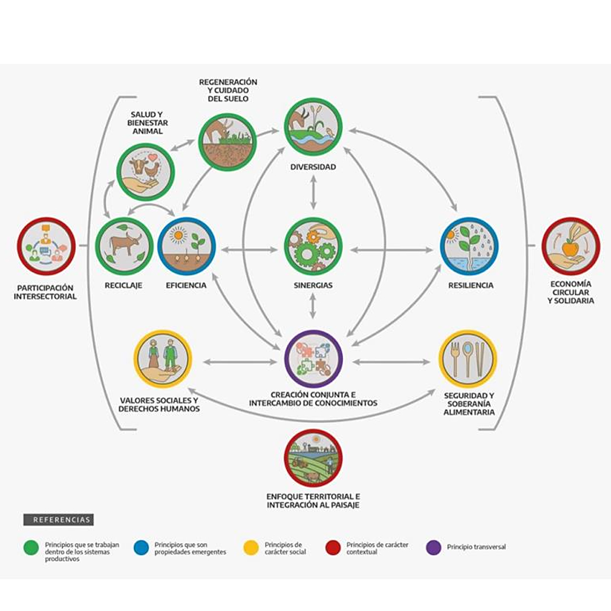

Principios de la Agroecología
La agroecología es un paradigma que promueve el diseño y gestión de sistemas de producción agropecuaria, recolección, pesca, elaboración, comercialización, consumo y comensalidad, económicamente viables, socialmente justos y ambientalmente sostenibles, caracterizados por una mayor resiliencia socio-ecológica y orientados a fortalecer el buen vivir de toda la sociedad. Para más info te dejo el siguiente link: https://www.youtube.com/watch?v=653MRe7g7jI&t=67s"
